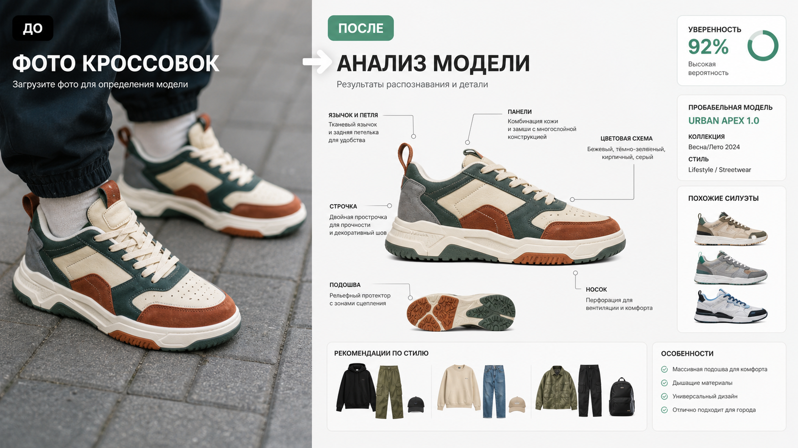

Промтзилла
Кроссовки часто узнаются по силуэту, подошве, панели носка, язычку, швам и цветовой схеме. Этот промт просит ИИ разобрать все признаки по порядку.

Пошаговая инструкция
- 1Сделай фото сбоку, сверху и подошвы; не обрезай язычок, пятку и логотипы, если они есть.
- 2Загрузи снимок в инструмент определения модели кроссовок по фото.
- 3Вставь промт и попроси дать похожие модели, если точность низкая.
- 4Для проверки подлинности добавь фото бирки, коробки, стелек и швов.
- 5Попроси ИИ предложить 3 образа, с чем носить найденную модель.
Пример результата
На обложке показан типичный сценарий: слева обычное исходное фото, справа результат, который можно получить после анализа через инструмент определения модели кроссовок по фото.
Промт
RU
Определи модель кроссовок на фото. Сделай ответ структурировано: — вероятный бренд; — вероятная модель или серия; — коллекция, цветовая схема и примерный год, если можно определить; — уровень уверенности; — признаки, на которых основан вывод: силуэт, подошва, носок, панели, швы, язычок, пятка, логотипы, материалы; — похожие модели, с которыми можно перепутать; — признаки, которые нужно сфотографировать крупнее для уточнения; — 3 идеи, с чем носить эту модель. Не подтверждай оригинальность по одному фото. Если логотипов нет или модель вымышленная, дай вероятное описание стиля вместо точного названия.
EN
Identify the sneaker model in the photo. Structure the answer: — probable brand; — probable model or series; — collection, colorway, and approximate year if possible; — confidence level; — clues used: silhouette, sole, toe box, panels, stitching, tongue, heel, logos, materials; — similar models it can be confused with; — details that should be photographed closer for clarification; — 3 outfit ideas for styling this model. Do not authenticate originality from a single photo. If there are no logos or the model is fictional, provide a likely style description instead of an exact name.
Важно
По одному фото нельзя надёжно подтвердить оригинальность кроссовок. Для покупки проверяй бирки, коробку, стельки, качество швов и продавца.
Теги